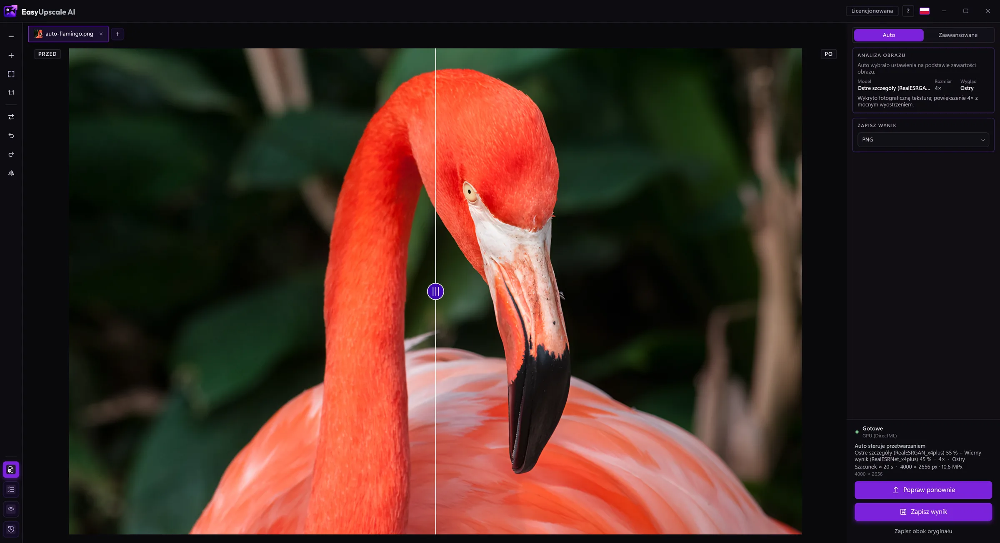

Czytelny tekst na zdjęciu
Etykieta na produkcie, tablica, strona dokumentu czy zrzut ekranu po powiększeniu często zlewają litery. EasyUpscale AI ma własny model tekstu, wytrenowany od zera na literach, etykietach i dokumentach.

Pobierz za darmo dla Windows · Kup licencję · 8,99 €
Jak to zrobić
- Strona tekstu. Tryb Auto rozpoznaje obraz, który naprawdę jest tekstem (jasny papier, cienki ciemny tusz w wierszach), i używa modelu tekstu.
- Tekst na zdjęciu. Na zwykłym zdjęciu Auto znajduje fragmenty z tekstem (etykietę, tablicę, kartkę na stole) i powiększa tylko je modelem tekstu. Reszta przechodzi przez model zdjęć, a brzegi łagodnie się łączą.
- Ręcznie. W trybie zaawansowanym (z licencją) możesz wybrać model tekstu dla całego obrazu.
Szczerze
- Wykrywanie tekstu jest celowo ostrożne: znajduje mniej więcej trzy czwarte etykiety i nic na zdjęciach bez tekstu. Pominięte słowo po prostu powiększy model zdjęć.
- Model powiększa, nie czyta (to nie OCR). Bardzo rozmazany tekst pozostanie nieczytelny.
- Model jest trenowany wyłącznie na danych, które wolno wykorzystywać komercyjnie (zob. O projekcie).